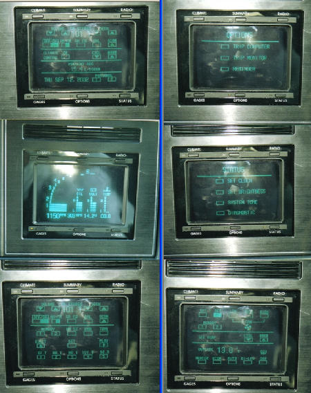

Buick Riviera GCC
The first automotive touchscreen — a green-phosphor CRT dashboard, 15 years too early

Overview
The Buick Riviera Graphic Control Center (GCC), introduced as standard equipment on the 1986 Buick Riviera, was the first production touchscreen interface in any automobile. A 5-inch green-phosphor cathode ray tube (CRT) covered by an invisible Mylar resistive-touch membrane replaced conventional knobs, buttons, and sliders with six context-dependent soft-key zones. The system controlled automatic climate control, AM/FM radio with graphic equalizer, trip calculations, vehicle gauges, and complete diagnostic information. Its development began in November 1980 under GM Chairman Roger B. Smith's enthusiastic approval; a test fleet of 100 1984 Rivieras evaluated the experimental system before its 1986 debut. The GCC also appeared in the 1988-89 Buick Reatta and a modified version (Visual Information Center) in the 1989-92 Oldsmobile Toronado. GM abandoned the system shortly thereafter — not because it failed, but because the public wasn't ready. It would take the auto industry another 15+ years to catch up.
Deep dive
The GCC used a Sony-sourced green-phosphor CRT with a transparent Mylar resistive-touch membrane using row-and-column-encoded transparent conductors. Each of six soft-key zones changed function contextually: the same spot on the screen could be "temperature up" on the climate page and "seek forward" on the radio page. The CRT required several seconds to warm up, so Buick engineers designed the GCC to begin warming when the driver touched the door handle — an early example of context-aware computing. If the screen wasn't touched within 30 seconds of door opening, it shut off. When the ignition was switched on, the display advanced from the Buick logo splash screen to a home page covering 90% of routine driver interactions. The Software-Defined Dashboard. The GCC represented a fundamental shift in automotive interface philosophy: the dashboard was no longer a fixed array of dedicated hardware controls but a reconfigurable software surface. Tapping "Gauges" brought up a digital instrument panel. Tapping "Radio" revealed a graphic equalizer with touch-adjustable frequency bands. Tapping "Diagnostics" displayed powertrain, electrical system, and brake status. Each tap drilled deeper into nested menus. Physical controls that remained (steering wheel, gear selector, turn signals) were those where tactile feedback was essential for safety. For everything else, Buick bet on glass — decades before Tesla made the same bet. HCI Significance. The GCC is significant for three reasons. First, it deployed touchscreen interaction in an environment where the user's primary task was NOT operating the computer — the driver was driving, and the touchscreen was a secondary interface. This forced design constraints (large touch zones, minimal menu depth, no keyboard) that anticipated mobile and automotive UI design. Second, the pre-warming behavior triggered by door handle touch was an early example of context-aware computing, anticipating user intent before explicit interaction. Third, the GCC demonstrated that reconfigurable software interfaces could replace fixed hardware controls in safety-critical environments — a debate that continues in modern automotive design.
Team & pioneers
- Buick Motor Division (Flint, MI). Initiated the GCC project in November 1980; championed by Buick executive Cary Wilson.
- Roger B. Smith. GM Chairman who enthusiastically approved the project in early 1981, believing this technology would keep GM the world's leading automaker.
- AC Spark Plug / Delco Electronics. Hardware development for the GCC system.
- Delco Systems Operation (Santa Barbara, CA). Independently developed the automotive touch-sensitive CRT; handled all software design.
- Cary Wilson. Buick executive who championed the GCC concept; predicted touchscreens would eventually reach lower-price cars.
Media
Sources
- Hagerty — "Infotainment systems? That's so 1986" by Larry Printz (Dec 2017) — detailed GCC development history
- Automotive History — "The First Car with a Touchscreen is from 1986"
- Top Gear — "Here's how car screens have grown through history"
- Wikipedia — Buick Riviera (seventh generation, 1986-1993)
- Wikimedia Commons image — User:Tamas Szabo, CC BY-SA 4.0